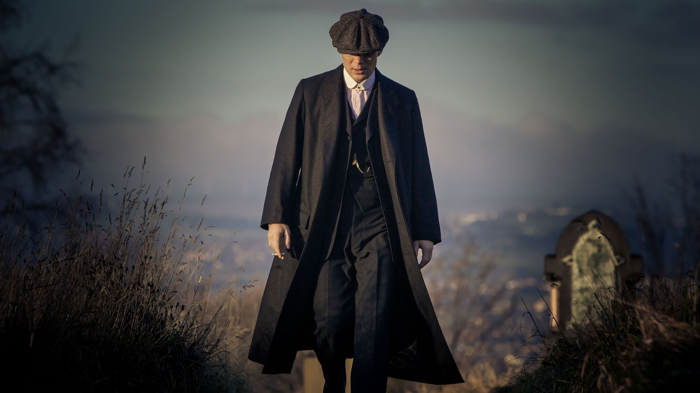

Thomas Shelby

Thomas Shelby est un vétéran décoré de la Première Guerre mondiale. Avec sa fratrie, il est à la tête d'un gang, les Peaky Blinders, ainsi nommés, car ils dissimulent des lames de rasoir dans les visières de leurs casquettes pour aveugler ou réduire au silence les témoins de leurs actes.